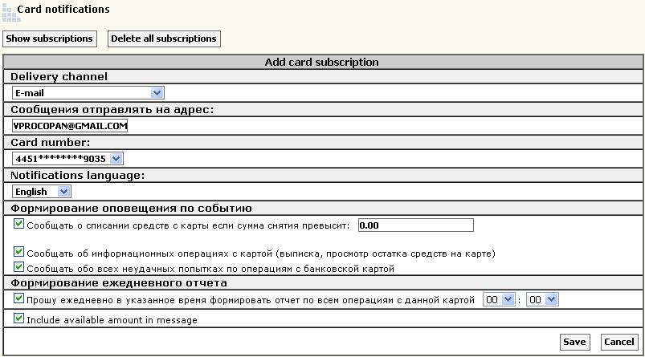
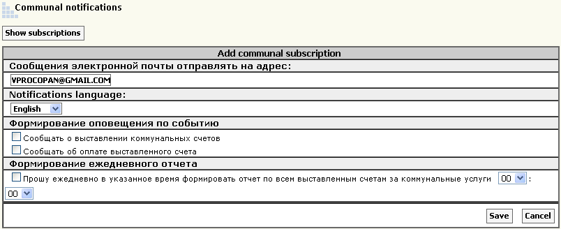
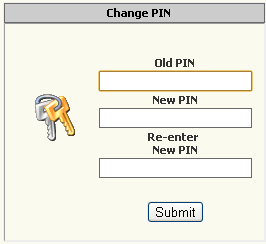
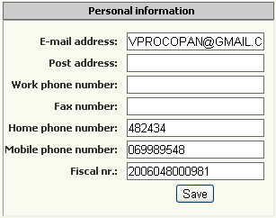

| |
||
|
|
You have the ability to customize notifications by SMS or Email, when changes in the accounts, payments and documents.
Cards, notices of events of withdrawal from the account statement, view the remainder, failed attempts to operations on the map.
Accounts, notices of events exhibiting communal bills, paying bills.
The documents provide a report on the accounts in the form of a document.
Exchange rate provides data on the exchange rate.
Sdes can change the PIN account in the system TeleBank.
Edit personal data are used in the system Telebank.

Change the menu to the right on the website Telebank.md. Select the blocks as desired.
Exchange rates, Scores, Stats